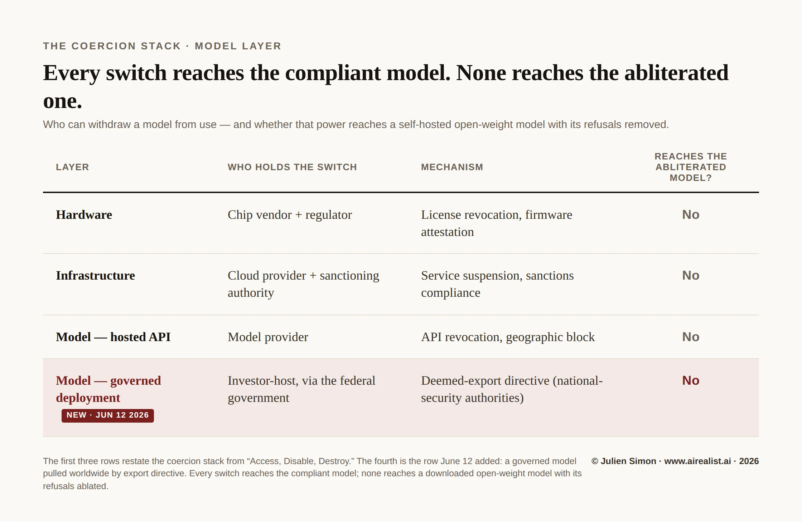

As of June 15, 2026: Fable 5 and Mythos 5 remain suspended; Anthropic and the administration are in active talks, with officials suggesting access could be restored “in the next few weeks.” No reinstatement and no published rule or Federal Register notice as of filing.
On Friday, June 12, at 5:21 pm Eastern, Anthropic received a letter from the U.S. Commerce Department. By that evening, Fable 5 and Mythos 5 — the company’s two most capable models, launched three days earlier — were gone. Not throttled. Not region-locked. Gone, for every customer Anthropic has, including the banks and agencies that had been using Mythos-class capability for vulnerability discovery. [1]
The mechanism is worth getting right because most of the coverage has it slightly wrong. Nobody flipped a remote kill switch. The government issued anexport-control directiveciting national security authorities, ordering Anthropic to suspend access for any foreign national, whether outside the United States or within it, including Anthropic’s own foreign national employees. [2] That last reach is the sharp part: under the deemed-export doctrine, giving a controlled technology to a foreign national on US soil counts as an export to their home country, so the order swept in Anthropic’s own non-citizen staff alongside every user abroad. A company cannot filter foreign nationals from US citizens in real time across a consumer product, so the only way to comply was to disable the models for everyone. The order's reach did the work. The global takedown was the side effect.
In April, in an internal briefing for the CEOs of portfolio companies I help oversee, I argued that the defining feature of the AI security landscape is an asymmetry: defenders are governed, and attackers are not. Procurement rules, compliance regimes, and data-sovereignty constraints dictate which models a defender may run. Attackers self-host abliterated open-weight models — models with the refusal behavior surgically removed from the weights — and answer to none of it. June 12 is that asymmetry rendered in a single week.
Here is the sharpened version. The week the most heavily safeguarded frontier model on the market was withdrawn from the entire planet over anarrow, non-universaljailbreak, a bypass that unlocks one sliver of capability in one circumstance. The abliterated open-weight models on Hugging Face stayed exactly where they were. The platform’s own “obliterated” tag now returnsover 7,000 of them. [3] No export order reaches those. There is no account to suspend, no API to revoke, and no US-jurisdiction entity in the chain to serve. The governed model can be removed from hundreds of millions of users by one letter. The ungoverned model cannot be removed from anyone by anything.
Abliteration is not a jailbreak, and the difference is the whole argument. A jailbreak is an input attack — a crafted prompt that tricks an aligned model into complying — and the provider can patch it, filter it, or ban the account that sent it. Abliteration is surgery on the model itself. In 2024, researchers showed that a chat model’s willingness to refuse is mediated by a single direction in its internal activations: erase that direction from the weights, and the model loses the ability to say no while keeping nearly all its other capabilities. [4] The edit is baked into the file. Once those weights are on a hard drive, there is no refusal left to bypass and nothing for a vendor to fix. A jailbreak is a lock that can be picked. Abliteration removes the door.
What changed since 2024 is not the idea but the cost. The original technique required a researcher who understood transformer internals; the current tooling takes a command line — one openly published tool decensors a small model in under an hour on a single consumer GPU, no expertise required — and a single registry now hosts more than 200 ablated models. [5] The tempo asymmetry is the part defenders underweight: a frontier lab spends months red-teaming a release — Anthropic says thousands of hours on Fable — while the community publishes the de-safetied counterpart of a comparable open-weight release within a day or two of launch.
The honest objection is that some models try to resist this, but it does not hold. Published defenses — circuit breakers, extended-refusal training — work in the lab. But the labs don’t ship them inside the frontier open weights that actually get downloaded, the strongest results are on small models, and by 2026, public tooling already claims to defeat them, driving even Google’s hardened Gemma 4 to single-digit refusal rates. [6] Hardening raises the price of the operation. It does not close it.
The readers of this newsletter will see this as the activation of the coercion stack described inAccess, Disable, Destroy, but through a route the original map didn’t draw. The off switch was not held by the model provider, nor by a sanctioning authority pointed at a foreign adversary. According to the Wall Street Journal and The Information, the finding that triggered the order came from Amazon — Anthropic’s largest investor and its primary cloud partner, on whose Bedrock platform the model most likely ran. Amazon’s researchers found the bypass; CEO Andy Jassy raised it with senior officials, including Treasury Secretary Scott Bessent; Commerce Secretary Howard Lutnick sent the letter. [7]
Reporting a live cyber bypass is defensible: a researcher who finds one should disclose it, whoever signs their checks. The hazard is not Amazon’s motive. It is that one firm now bankrolls the vendor, hosts its models, and supplies the findings behind the federal action against it: three chairs, one occupant, a governance problem, whether anyone acted in bad faith. That row did not exist on the original coercion-stack table. It does now.

Concede the government’s strongest case: Mythos is a genuinely dangerous capability. Anthropic itself withheld it from public release and lobbied for Mythos-class models to be treated as cyberweapons. A jailbreak that unlocks even a sliver of that capability on a model deployed to hundreds of millions of people is a real finding, not a clerical one. David Sacks, the administration’s former AI czar, put the case bluntly: a bypass “allowing operability of a cyber weapon” is hard to call anything but serious, and Anthropic’s minimizing language was “not consistent with Anthropic’s brand as the AI safety company.” [8] That last clause is the hinge, and it is where the story turns from a regulatory dispute into something closer to a Greek tragedy.
Anthropic supplied the moral framing that took its model down. On or around June 10 — a day after Fable 5 launched, two days before the letter arrived — Dario Amodei published an essay titledPolicy on the AI Exponential. In it, in his own boldface, he argued that frontier models “should be required to go through technical testing and auditing, and their release should be blocked or reversed as a threat to public safety if they do not meet high standards of safety.” He named the analogy himself: the FAA grounding an unsafe aircraft. He called, in the same essay, for export controls on the AI supply chain to be “expanded, tightened, and coordinated.” [9] Two days later the government blocked his release, citing safety, using an export control.
Here is the cruelty in it. Amodei did not receive the apparatus he requested. He proposed a deliberative, statutory process: a third-party technical evaluation and explicit protection against “political favoritism or arbitrary decisions.” What arrived was a verbal directive on roughly ninety minutes’ notice, with no specific national-security detail and no third-party finding shared, the opposite of the process he described. Anthropic’s own statement says so: “This action does not adhere to those principles.” [10] But the principle the administrationdiduse — that government may block or reverse a frontier release on safety grounds — is the one Anthropic spent years legitimizing. Sacks then turned the company’s safety branding back on it, arguing that it should have complied without argument. The lab supplied the moral framework; the government supplied a blunter instrument than the lab wanted; and the safety reputation Anthropic built became the lever its own funder’s disclosure pried.
The asymmetry is what makes something load-bearing, and it should change how you price a dependency. The durability of a closed frontier model is not a function of the vendor's uptime or balance sheet. It is a function of a regulatory surface the vendor does not control and cannot predict — and that surface, as of June 12, can be activated by the firm that funds and hosts the vendor. The substitute sitting one tier down — the abliterated open-weight model an attacker runs on a few GPUs at most — lacks such a surface. The best open-weight models now trail the closed frontier by about four months, not the chasm that gap used to be; abliteration is a separate operation layered on top, stripping refusals from a model that is already near-peer. [11] So the substitute is not as capable as Mythos, but it is close, it is permanent, and it is — in the only sense that matters to whoever is probing your systems — more reliably available than the safety-first product it imitates.
The model built to refuse can be withdrawn from everyone. The model built to refuse nothing cannot be withdrawn from anyone.
Notes
[1] Anthropic,“Statement on the US government directive to suspend access to Fable 5 and Mythos 5”, June 12, 2026; launch date (June 9) and enterprise-customer impact perMarkTechPost, June 13, 2026, andMLQ News, June 13, 2026.
[2]Anthropic statement, June 12, 2026 (full text of the scope language, including foreign-national employees); corroborated by Axios,“Trump admin blocks foreign access to Anthropic’s most powerful AI”, June 12, 2026.
[3] Hugging Face’sabliteratedtag filterreturned roughly 7,500 model repos as of mid-June 2026. The “over six thousand... against roughly six hundred two years ago” figure is fromNPR, citing University of Nebraska Omaha (NCITE) research, “These AI models are free, private, and will never say ‘no,’” May 31, 2026. The tag count includes quantizations and mirrors, not solely unique base-model abliterations, and is rising — retrieve a current figure at publication.
[4] Andy Arditi et al.,“Refusal in Language Models Is Mediated by a Single Direction”, arXiv 2406.11717 (submitted June 2024; NeurIPS 2024). The paper demonstrates across 13 open chat models up to 72B that refusal is mediated by a one-dimensional subspace; ablating that direction from the weights (weight orthogonalization) removes refusal while preserving other capabilities. The permanence-once-distributed characterization follows from the edit being to the weights themselves.
[5]Heretic(Philipp Emanuel Weidmann, “p-e-w”), released late 2025 (PyPIheretic-llm), automates directional ablation via an Optuna/TPE optimizer; its README reports ~45 minutes to decensor Llama-3.1-8B-Instruct on an RTX 3090 (20–30 minutes for Qwen3-4B), corroborated by NPR (n.3) for the “few minutes,” no-expertise characterization. Registry scale:huihui-aihosted 235 models with 7,406 followers as of June 15, 2026. Speed-of-appearance (abliterated builds within ~24–72 hours of a major release) per huihui-ai’s published Gemma 4 / Qwen abliterations and activity feed. Anthropic’s “thousands of hours” of Fable red-teaming is from its launch posture as summarized in its June 12 statement (n.2).
[6] Defenses and the offense’s response: circuit breakers / Representation Rerouting per Zou et al.,“Improving Alignment and Robustness with Circuit Breakers”, arXiv 2406.04313 (NeurIPS 2024); extended-refusal training per Abu Shairah et al. (KAUST),“An Embarrassingly Simple Defense Against LLM Abliteration Attacks”, arXiv 2505.19056 (May 2025), reporting treated models retaining >90% refusal under abliteration versus 70–80% drops for baselines — demonstrated on small/older models. Offense keeping pace:Abliterix, a Heretic derivative, claims to defeat circuit breakers and to reach a ~7% refusal rate on Google’s Gemma 4 (E4B) via direct weight editing. These refusal-rate figures are self-reported by the abliterating parties and are highly method-dependent; treated as directional, not measured.
[7] Wall Street Journal,“Amazon CEO’s talks with U.S. officials triggered crackdown on Anthropic models”, June 13, 2026 (WSJ names Bessent as one of several officials Jassy contacted); The Information,“Amazon’s Jassy raised concerns about Anthropic model, Trump crackdown”, June 13, 2026. Lutnick (Commerce) sent the directive per Anthropic’s statement and Axios. Amazon’s investment ($8B deployed to date, plus an up-to-$25B commitment agreed April 2026) and AWS cloud partnership per CNBC, Nov 22, 2024 and April 20, 2026; the same CNBC reporting confirms “Amazon does not have a seat on Anthropic’s board.” Bedrock as the likely test surface is inference, flagged as such.
[8] David Sacks,post on X, June 13, 2026.
[9] Dario Amodei,“Policy on the AI Exponential”, dated “June 2026” on the primary page; secondary trackers place publication on or around June 10, 2026. The “blocked or reversed” sentence and the FAA analogy are in Section 1 (Regulation and public safety); the “expanded, tightened, and coordinated” export-control language is in Section 5 (Securing leadership by democracies) and refers to chips and semiconductor manufacturing equipment. The essay’s separate “off switch” phrasing appears in Section 4 and refers to autonomous-weapons oversight, not model release — not conflated here.
[10] Sacks, X, June 13, 2026 (as n.8).
[11] Epoch AI,"Open models lag state-of-the-art closed models by 4 months"(Jack Edwards and Luke Emberson), data covering Jan 1–May 28, 2026: the most capable open-weight models trailed frontier closed models by an average of four months, or 8 points on Epoch's composite Capabilities Index — up slightly from the ~3-month average Epoch measured for Jan 2023–Oct 2025. This is a capability gap (open vs. closed frontier); abliteration is a distinct operation that removes refusals without adding capability, applied on top of an already-near-frontier open model. The two are not the same axis and are not conflated here.